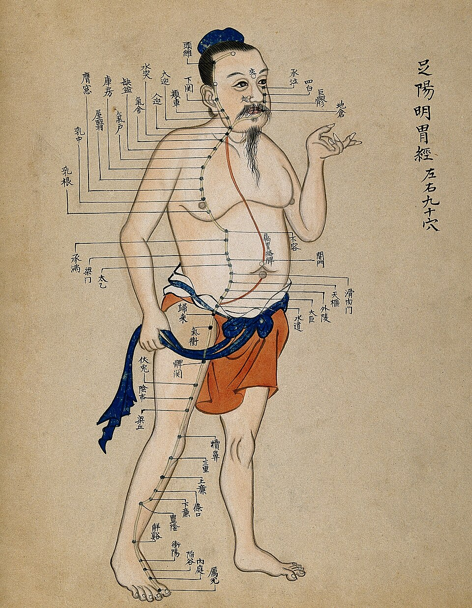

经络是运行全身气血、联络脏腑形体官窍、沟通上下内外、感应传导信息的通路系统，是人体结构的重要组成部分。
经络系统由十二经脉、奇经八脉和络脉等组成。十二经脉是经络系统的主体，包括手三阴经（手太阴肺经、手厥阴心包经、手少阴心经）、手三阳经（手阳明大肠经、手少阳三焦经、手太阳小肠经）、足三阴经（足太阴脾经、足厥阴肝经、足少阴肾经）、足三阳经（足阳明胃经、足少阳胆经、足太阳膀胱经）。
经络学说贯穿于中医学的生理、病理、诊断和治疗各个方面，与脏腑学说共同构成了中医学的理论核心。

👁 点击图中穴位热点查看详细信息
| 穴位 | 所属经络 | 定位 | 主治 | 保健应用 |
|---|---|---|---|---|
| 百会 | 督脉 | 头顶正中 | 头痛眩晕、失眠健忘 | 用手指轻叩或按摩 |
| 合谷 | 手阳明大肠经 | 手背第1、2掌骨间 | 头痛、牙痛、感冒 | 面口诸疾首选穴 |
| 足三里 | 足阳明胃经 | 小腿外侧，犊鼻下3寸 | 胃痛、腹胀、免疫力低 | 强壮保健要穴 |
| 三阴交 | 足太阴脾经 | 内踝尖上3寸 | 月经不调、失眠 | 妇科调理常用穴 |
| 太冲 | 足厥阴肝经 | 足背第1、2跖骨间 | 头痛眩晕、高血压 | 疏肝理气要穴 |
| 涌泉 | 足少阴肾经 | 足底前1/3凹陷处 | 失眠、眩晕、高血压 | 每晚泡脚后按摩 |
| 关元 | 任脉 | 脐下3寸 | 遗尿、月经不调 | 温灸保健大穴 |
| 肾俞 | 足太阳膀胱经 | 第2腰椎旁开1.5寸 | 腰痛、肾虚耳鸣 | 双手搓热后按摩 |
| 神门 | 手少阴心经 | 腕横纹尺侧端 | 失眠、心悸、健忘 | 睡前轻柔按揉 |
| 命门 | 督脉 | 第2腰椎棘突下 | 腰膝酸软、畏寒 | 艾灸温补最佳 |
| 大椎 | 督脉 | 第7颈椎棘突下 | 发热感冒、项强 | 感冒初起刮痧或按揉 |
| 内关 | 手厥阴心包经 | 腕横纹上2寸 | 心悸胸闷、恶心 | 晕车时按压 |
| 气海 | 任脉 | 脐下1.5寸 | 气虚乏力、腹胀 | 常灸保健大穴 |
| 天枢 | 足阳明胃经 | 脐旁开2寸 | 腹痛便秘、腹泻 | 腹部按揉调节肠胃 |
| 太冲 | 足厥阴肝经 | 足背第1、2跖骨间 | 头痛眩晕、易怒 | 睡前按揉疏肝解郁 |
| 至阳 | 督脉 | 第7胸椎棘突下 | 胸闷心痛、胃痛 | 按压缓解心绞痛 |
| 印堂 | 经外奇穴 | 两眉头连线中点 | 头痛鼻塞、失眠 | 轻柔按摩通鼻窍 |
| 膻中 | 任脉 | 两乳头连线中点 | 胸闷气短、心悸 | 气会膻中，宽胸理气 |
循行：起于中焦，下络大肠，沿臂内侧前缘至拇指桡侧端
主病：咳嗽、气喘、胸闷、咽喉肿痛、肩背痛
时辰：寅时（3:00-5:00）
手三阴循行：起于心中，沿臂内侧后缘至小指桡侧端
主病：心痛、心悸、失眠、健忘、手心热
时辰：午时（11:00-13:00）
手三阴循行：起于胸中，沿臂内侧中间至中指端
主病：心痛、胸闷、心悸、癫狂、腋下肿
时辰：戌时（19:00-21:00）
手三阴循行：起于食指桡侧端，沿臂外侧前缘上行至鼻旁
主病：齿痛、鼻衄、咽喉肿痛、便秘、腹泻
时辰：卯时（5:00-7:00）
手三阳循行：起于小指尺侧端，沿臂外侧后缘上行至耳前
主病：耳聋、目黄、咽喉痛、肩臂外侧痛
时辰：未时（13:00-15:00）
手三阳循行：起于无名指尺侧端，沿臂外侧中间上行至眉梢
主病：偏头痛、耳鸣、目外眦痛、肩臂外侧痛
时辰：亥时（21:00-23:00）
手三阳循行：起于鼻旁，经面额下行至足第二趾外侧端
主病：胃痛、腹胀、面瘫、前额头痛、下肢前缘痛
时辰：辰时（7:00-9:00）
足三阳循行：起于目内眦，经头项背腰下行至足小趾外侧
主病：头痛项强、腰背痛、小便不利、遗尿
时辰：申时（15:00-17:00）
足三阳循行：起于目外眦，经头侧胸胁至足第四趾外侧
主病：偏头痛、口苦、胁痛、下肢外侧痛
时辰：子时（23:00-1:00）
足三阳循行：起于足大趾内侧端，沿小腿内侧上行至舌下
主病：腹胀、腹泻、食欲不振、水肿、月经不调
时辰：巳时（9:00-11:00）
足三阴循行：起于足小趾之下，沿下肢内侧后缘上行至舌根
主病：腰膝酸软、耳鸣、遗精、水肿、气喘
时辰：酉时（17:00-19:00）
足三阴循行：起于足大趾外侧端，沿小腿内侧上行至头顶
主病：胸胁胀痛、头痛眩晕、月经不调、疝气
时辰：丑时（1:00-3:00）
足三阴